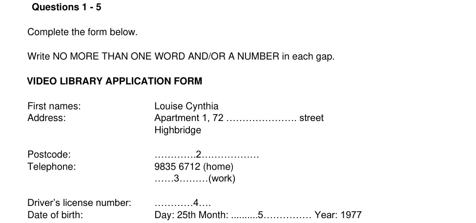
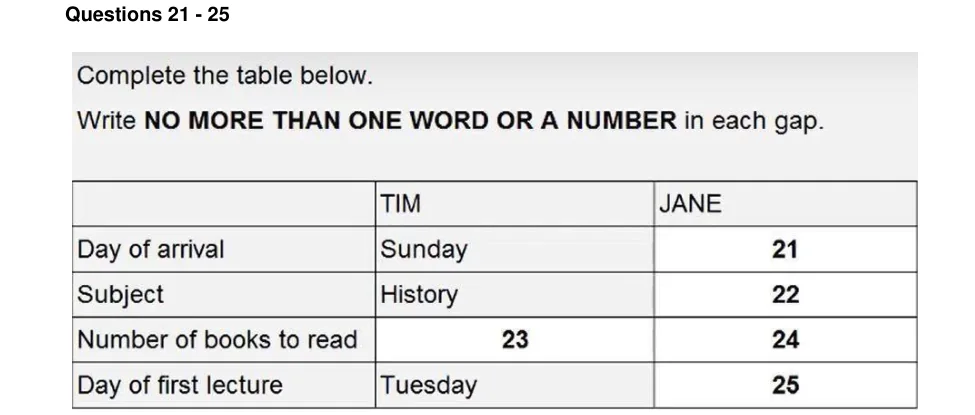
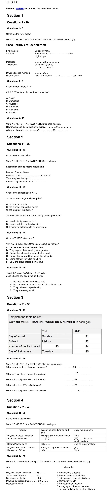

IELTS Listening: Test 6
Listening and questions
Section 1Questions 1–10

Questions 6–8
Choose three letters A - F
6 & 7 & 8 What type of films does Louise like?
Questions 9–10
Write NO MORE THAN TWO WORDS for each answer.
How much does it cost to join the library? 9
When will Louise’s card be ready? 10
Section 2Questions 11–20
Questions 11–13
Complete the note below Write NO MORE THAN TWO WORDS in each gap
Expedition across Attora mountains
Leader: Charles Owen
Prepared a 11 for the trip
Total length of the trip 12
Climbed highest peak in 13
Questions 14–15
Choose the correct letters A - C
14 What took the group by surprise?
15 How did Charles feel about having to change routes?
Questions 16–18
Choose THREE letters A - F
16 & 17 & 18 What does Charles say about his friends?
Questions 19–20
19 & 20 Choose TWO letters A - E What does Charles say about the donkeys?
Section 3Questions 21–30

Questions 26–30
Write NO MORE THAN THREE WORDS for each answer
What is Jane’s study strategy in lectures? 26
27
What is Tim’s study strategy for reading?
What is the subject of Tim’s first lecture? 28
What is the title of Tim’s first essay? 29
What is the subject of Jane’s first essay? 30
Section 4Questions 31–40
Questions 31–35
Complete the table below Write NO MORE THAN TWO WORDS in each gap
| Course | Type of course: duration and level | Entry requirements |
| Physical Fitness Instructor | Example Six-month certificate | None |
| Sports Administrator | 31 | 32 in sports administration |
| Sports Psychologist | 33 | Degree in psychology |
| Physical Education Teacher | Four-year degree in education | 34 |
| Recreation Officer | 35 | None |
Questions 36–40
What is the main role of each job? Choose the correct answer and move it into the gap.
Job Main role
Physical fitness instructor 36 A the coaching of teams
Sports administrator 37 B the support of elite athletes
Sports psychologist 38 C guidance of ordinary individuals
Physical education trainer 39 D community health
Recreation officer 40 E the treatment of injuries
- F arranging matches and venues
- G the rounded development of children
Show the original book pages (picture)

Tap or click the pages to open them full size in a new tab.
Check your answers
Marking ignores capital letters and accepts plurals and the usual alternative answers. If your answer is right but not accepted, press My answer is also right under it.
Tapescript
Check your answers first, then the tapescript opens here.